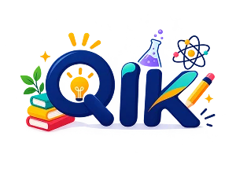
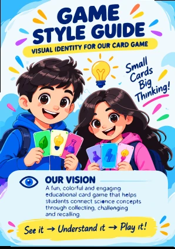
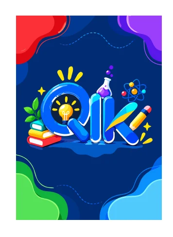

Small cards, big thinking!
A science card game that turns revising concepts into something students collect, connect and talk about.
QIK is a colourful educational card game that helps students connect science concepts by collecting, challenging and recalling. Instead of reading a topic once, players build it, card by card, and then have to explain it to someone else.
Science chapters are full of linked ideas: causes, steps, diagrams, vocabulary. Students often meet them as separate facts, so revision becomes passive reading and it is hard to see how one idea leads to the next.
A game already asks players to match, group and explain. If each card carries one piece of a topic, then winning a round means connecting the pieces, which is exactly what revision should do.
Each topic has its own colour world, so a player can tell at a glance which cards belong together. Pick a topic and hover over the cards.
Every card has a job. A small code in the corner (P, C, D or M) tells the player what kind of card they are holding and how it can be used when giving clues.
The loop is short on purpose. Three actions, then pass the turn. Each player starts with 10 cards and aims for a hand of related groups.
Groups only count when the cards have a meaningful connection. The Master card is the wild card, but it can only stand in for cards from its own topic.
Collecting is only half the game. When a player completes 10 cards they call “Challenge!” and the real learning begins, because they have to prove they understand the topic.
The instruction book follows the same bright style as the cards, with one idea per panel: the game, card types, your turn, challenge, recall and win. Flip through it.

The box carries the promise of the game: a deep navy base for contrast, a playful QIK mark with a bulb and a flask, two friendly characters holding cards, and a “how to play” panel on the side so the rules are visible before the box is opened.

A single shared back keeps the deck anonymous in a player’s hand, so opponents cannot guess a topic from the colour while it is face down.
Topic colours let players build groups by sight first and by meaning second. Yellow is reserved for Master cards so the wild card is always easy to spot.
The corner codes (P1, C2, D3, M) repeat top and bottom, so a card can be read from a fanned hand without opening it fully.
Clue cards list three guiding questions and every card ends with a one-line hint. The design supports the rule of the game: help someone think, don’t tell them the answer.
The how-to-play panel on the box and the six-panel guide use the same icons and steps, so learning the game and playing it feel like the same experience.